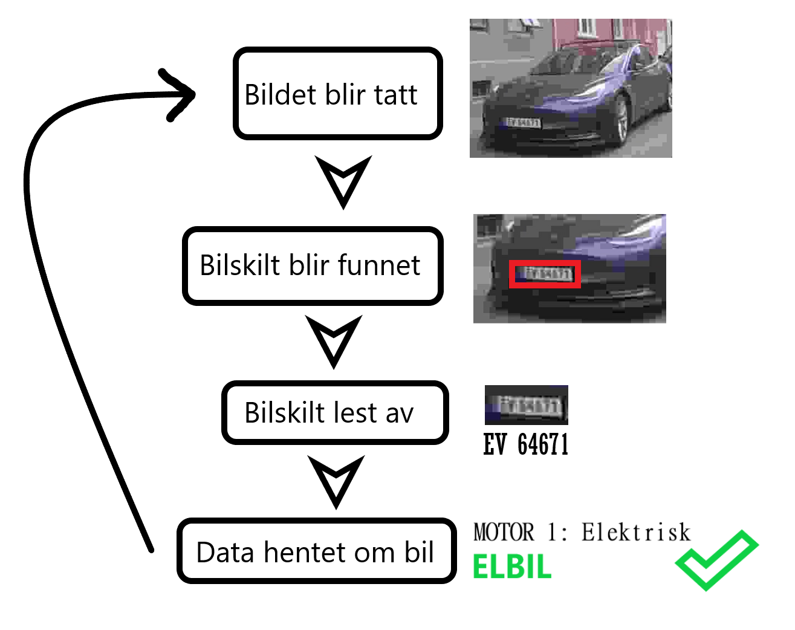
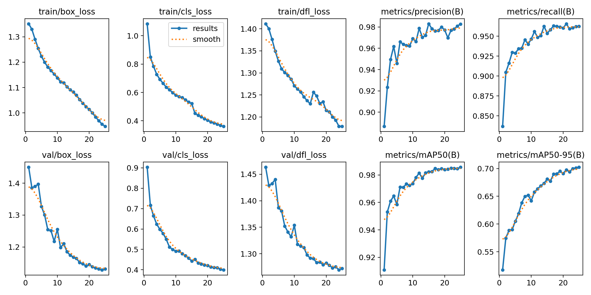

Is that car electric?
A group project at NTNU that detects whether a passing car is electric, end-to-end from a single frame. I built the vision side: a fine-tuned YOLOv8 to find the licence plate, then a CNN trained from scratch to read it, and finally a Statens vegvesen lookup to resolve the engine type.
The pipeline
- Plate detection: YOLOv8, after-trained on a small custom dataset of Norwegian plates from varied angles.
- Plate reading: A purpose-built CNN trained from scratch on plate crops. Small, fast, surprisingly accurate.
- Vehicle lookup: The plate text goes to the Statens vegvesen API, which returns the engine type. Electric vs. not falls out directly.

Why train a plate-reader from scratch
Generic OCR works on plates, but it's overkill: too many parameters, too little domain. Norwegian plates have a fixed alphabet, a fixed font, two predictable layouts. A small CNN with the right inductive bias outperformed off-the-shelf OCR on the data I had, and ran an order of magnitude faster.

End-to-end results
On test footage from real Trondheim streets, the system tagged each car with the right engine class in a single frame. EVs got highlighted green; combustion cars red.


Walkthrough
Full walkthrough of the pipeline.
What I'd improve
The classifier sometimes hesitates on plates with strong motion blur, the kind that come off cars actually moving. A small temporal stack of frames, or a quick deblurring pre-pass, would close that gap. The vegvesen API was also the slowest step by a wide margin; caching by plate prefix would have helped.
Course report
The Smart City project report (IELS2001), covering methodology, dataset choices and results, is in the repo: